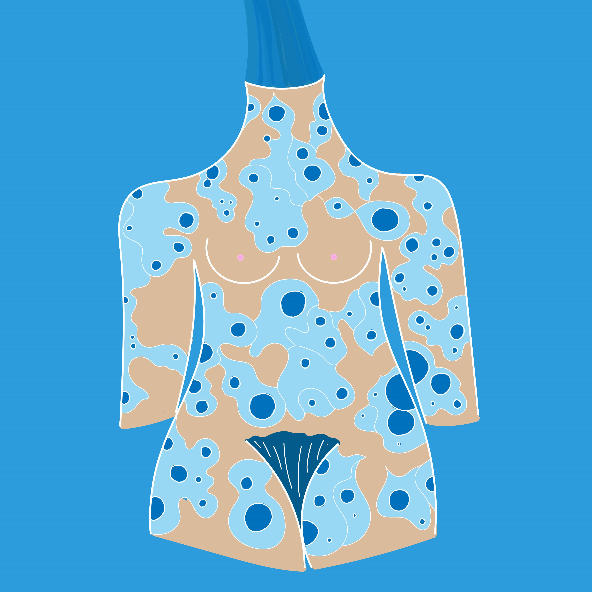
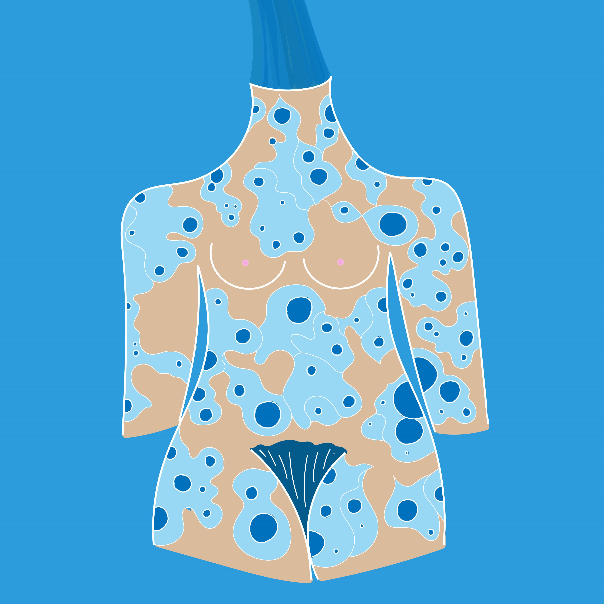
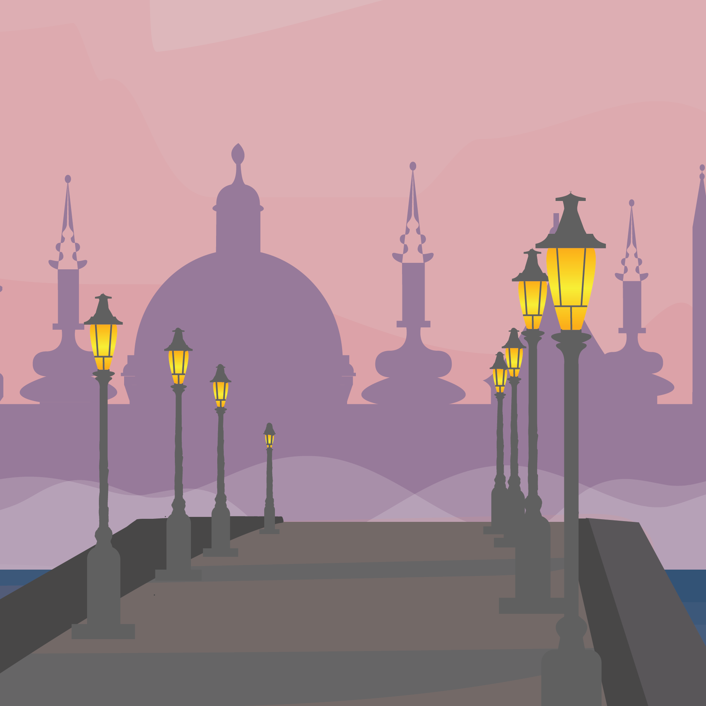
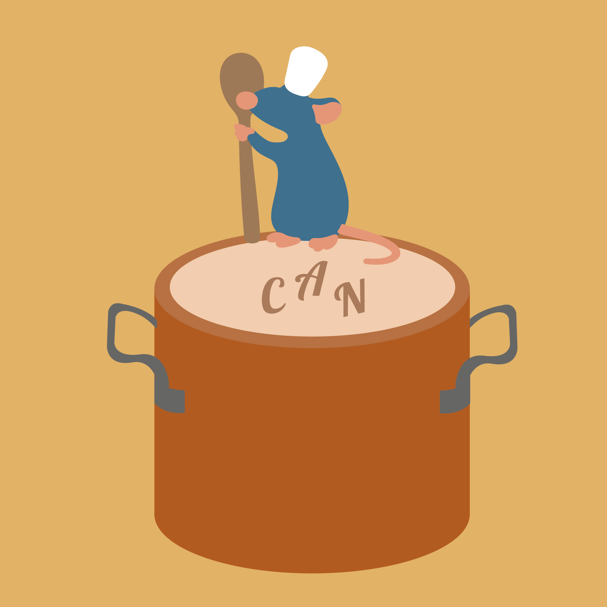
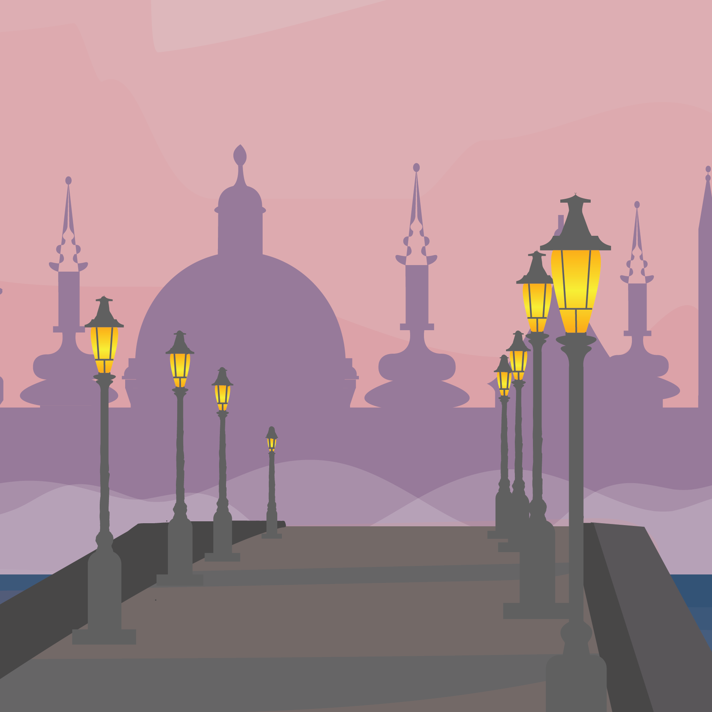
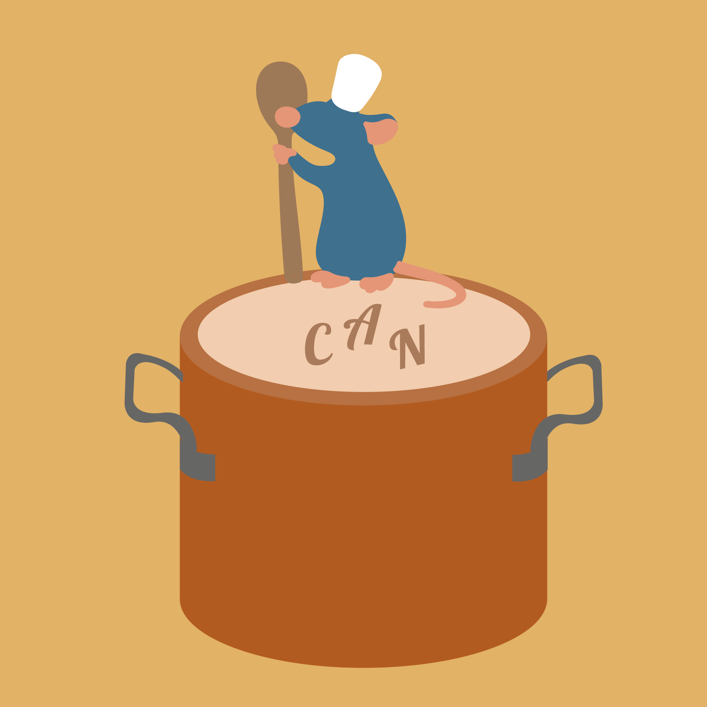

 





 Biophillia Poster Contest
Biophillia Poster Contest
This is a poster designed for a biophillia inspired poster competition. Submissions had to explore humans innate connection with nature and how it contributes to our physical and mental well being.
*FIXX
This piece is a deck of cards inspired by my zodiac sign.
Travel poster made for the city of Prague in the Czech Republic.
Movie posters inspired by the Disney film Ratatouille.
POP Style
This artwork was done in a POP comic book style that was used by rewnowned artist Roy Lichtenstein.
These are various food icons I designed based on sushi, toast, and crackers
One of the most annoying things for me when I go on vacation is when my suitcases' wheels get stuck and it's hard to maneuver my luggage. This project started as a way for me to re-design the wheels on suitcases and then evolved into an entire project focused on making a new suitcase that addresses the complaints most consumers, including myself, have. First I focused components of the suitcase itself, designing the wheels so they have 360 degree motion and clip in airtight bags that maximize the space in the suitcase. After, I decided to create the concept of an app that would make traveling easier.
Fairies
In this photoshop piece I experimented with the concept of fairies. I strove to make the scene feel very soft and mystical.
Glitch
Glitch is a movie poster I made for a technology based thriller film (that does not exist) in photoshop.
Album Cover
For this piece I designed a new album cover for Willow Smiths album WILLOW in photoshop. Willows album explores themes such as female empowerment and feminity. To play off of this I incorperated the symbol of the triple moon which signifies the three stages of a womens life; the maiden, the mother, and the crone. The triple moon connects to the divine feminine as well as the progression of life, death, and rebirth. Lotus flowers were used in this work as they similarly are assocaited with the cycle of life. The stages of a pink lotus flowers growth are also connected with the different stages of enlightnment in buddhism.